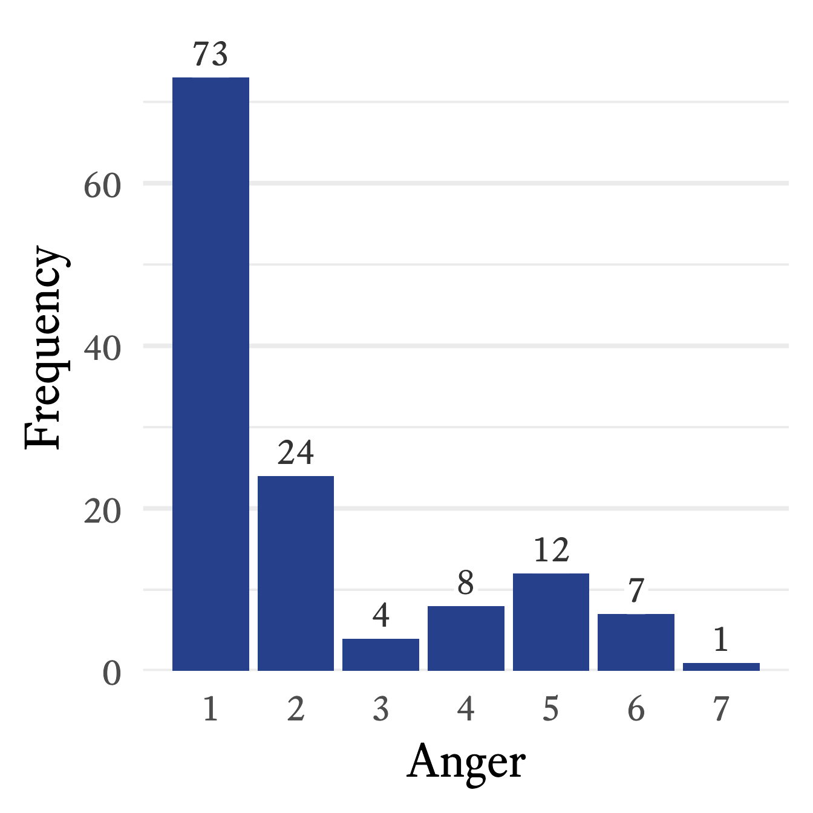
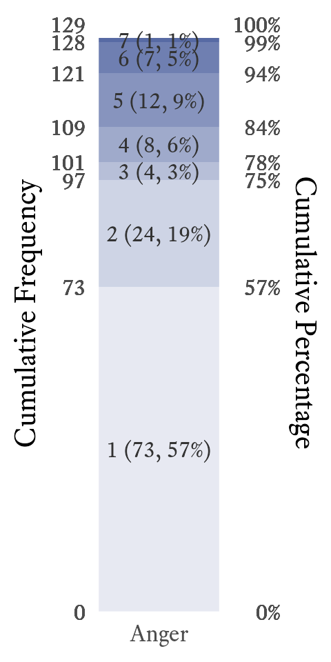
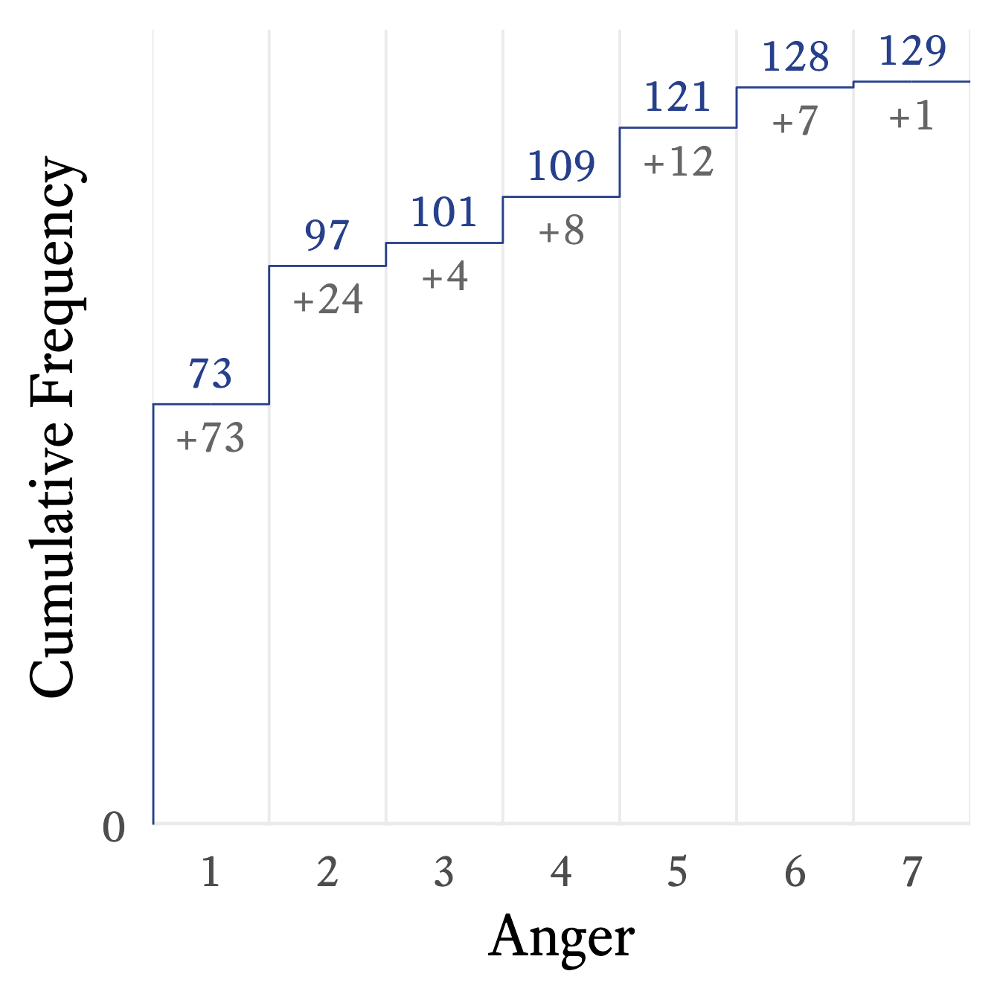

11 Frequency Distribution Tables
A simple way to describe a distribution is to list how many times each value in the distribution occurs. For example, in this distribution: \{10, 3, 4, 10, 6, 4, 6, 4\}, there is 1 three, 3 fours, 2 sixes, and 2 tens. The value that occurs most often is four. A frequency distribution table displays the number of times each value occurs, as in Table 11.1.
Value | Frequency | Cumulative | Proportion | Cumulative |
|---|---|---|---|---|
3 | 1 | 1 | .125 | .125 |
4 | 3 | 4 | .375 | .500 |
6 | 2 | 6 | .250 | .750 |
10 | 2 | 8 | .250 | 1 |
The median is 5, halfway between the two middle scores of 4 and 6.
It is common to include alongside the frequencies of each value the proportion (or percentage) of times a value occurs. If the frequency of sample space element i is f_i, and the total sample size is n, then the proportion of sample space element i is
p_i = \frac{f_i}{n}
In Table 11.1, the frequency of sixes is f=2 and there are n = 8 numbers in the distribution, thus the proportion of sixes is p = \frac{2}{8} = .25.
It is also common to supplement frequency distribution tables with additional information such as the cumulative frequency. For each sample space element, the cumulative frequency (cf) is the sum of the frequencies (f) of the current and all previous sample space elements.
cf_i= \sum_{j=1}^{i}{f_j}
Ordinal, interval, and ratio variables can have cumulative frequencies, but not nominal variables. To calculate cumulative frequencies, the sample space needs to be sorted in a meaningful way, which is not possible with true nominal variables. That is, there are no scores “below” any other scores in nominal variables.
The cumulative proportion (cp) is the proportion of scores less than or equal to a particular sample space element.
cp_i = \frac{cf_i}{n}
11.0.1 Frequency Distribution Tables in R
Let’s start with a data set from Garcia et al. (2010), which can accessed via the psych package.
# Get the Garcia data set from the psych package
d <- psych::GarciaThe sjmisc package (Lüdecke, 2025) provides a quick and easy way to create a frequency distribution table with the frq function.
sjmisc::frq(d$anger)x <numeric>
# total N=129 valid N=129 mean=2.12 sd=1.66
Value | N | Raw % | Valid % | Cum. %
-------------------------------------
1 | 73 | 56.59 | 56.59 | 56.59
2 | 24 | 18.60 | 18.60 | 75.19
3 | 4 | 3.10 | 3.10 | 78.29
4 | 8 | 6.20 | 6.20 | 84.50
5 | 12 | 9.30 | 9.30 | 93.80
6 | 7 | 5.43 | 5.43 | 99.22
7 | 1 | 0.78 | 0.78 | 100.00
<NA> | 0 | 0.00 | <NA> | <NA>Typically we use frequency distribution tables to check whether the values of a variable are correct and that the distribution makes sense to us. Thus the frq function is all we need most of the time. However, if you need a publication-ready frequency distribution table, you will probably have to make it from scratch (See Table 11.2).
*X* *f* *cf* *p* *cp*
1 1 73 73 .57 .57
2 2 24 97 .19 .75
3 3 4 101 .03 .78
4 4 8 109 .06 .84
5 5 12 121 .09 .94
6 6 7 128 .05 .99
7 7 1 129 .01 1.00 f = Frequency,cf = Cumulative Frequency, p = Proportion, and cp = Cumulative Proportion
11.0.2 Frequency Distribution Bar Plots



In Figure 11.1, the frequency distribution from Table 11.2 is translated into a standard bar plot in which each bar is proportional to the frequency of each response. A column bar plot allows for easy comparison of the frequency of each category. For example, in Figure 11.1, the most frequent response to the Anger question—1 (low)—draws your attention immediately. In contrast to the mental effort needed to scan frequencies listed in a table, the relative height of each frequency in the bar plot is perceived, compared, and interpreted almost effortlessly. With a single glance at Figure 11.1, no calculation is required to know that none of the other responses is even half as frequent as 1.
11.0.3 Frequency Distribution Stacked Bar Plots
In a standard bar plot, one may easily compare frequencies to each other, but that may not be what you wish the reader to notice first. A stacked bar plot emphasizes the proportions of each category as it relates to the whole. It also allows for the visual display of the cumulative frequencies and proportions. For example, in Figure 11.2, it is easy to see that more than half of participants have an anger level of 1, and three quarters have an anger level of 2 or less.
11.0.4 Frequency Distribution Step Line Plots
A step line plot can show the cumulative frequency’s relationship with the variable. For example, in Figure 11.3, it appears that the cumulative frequency rises quickly at first but then rises slowly and steadily thereafter.